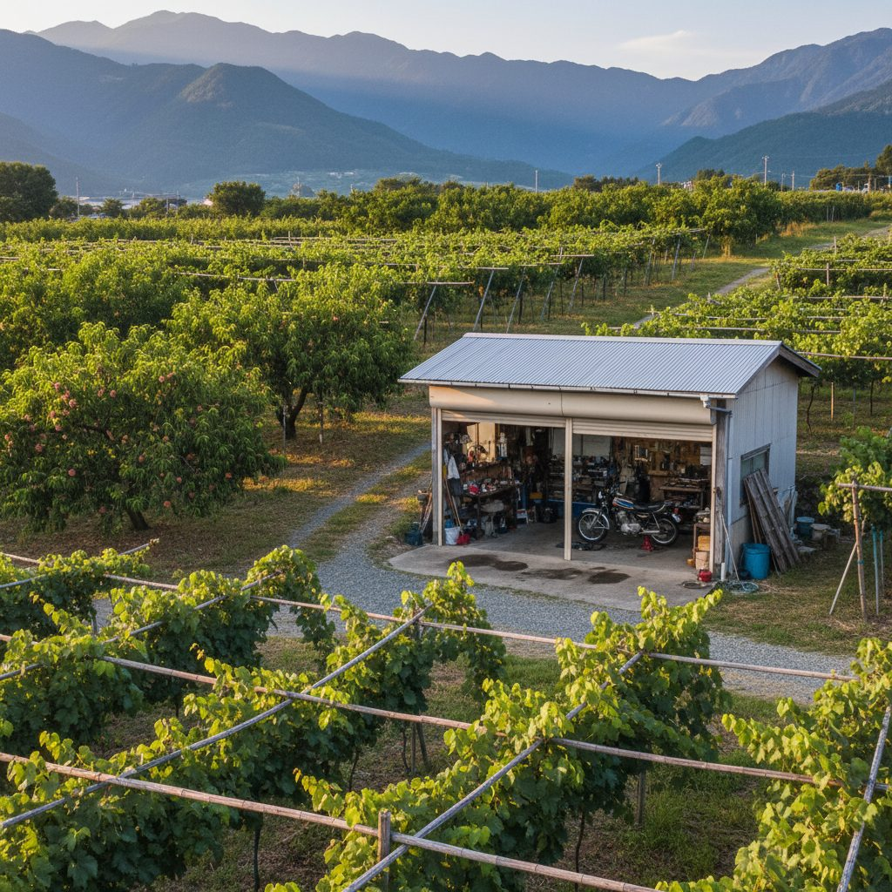
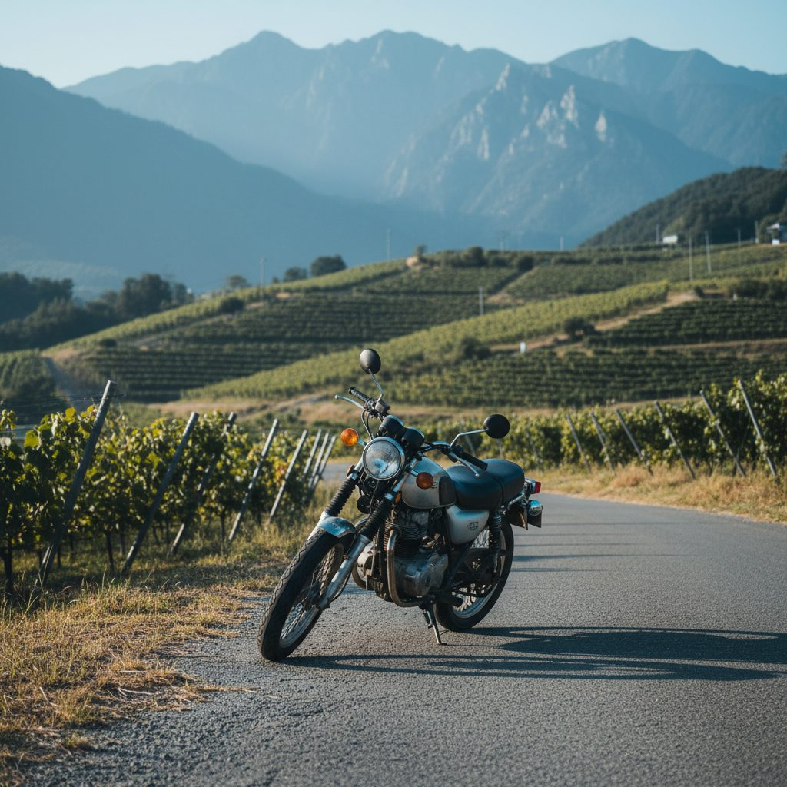
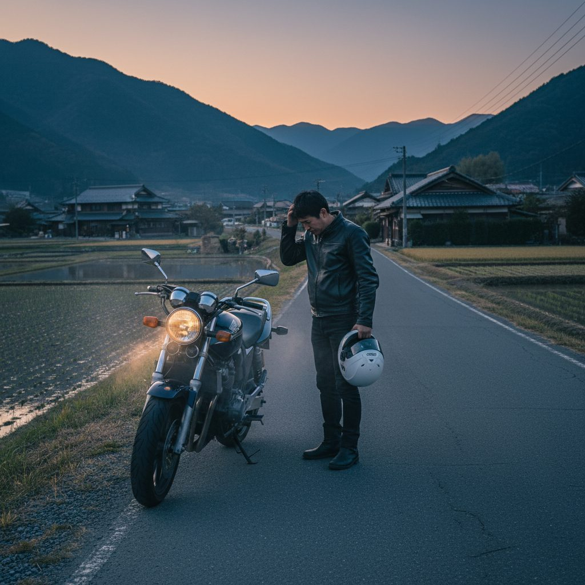
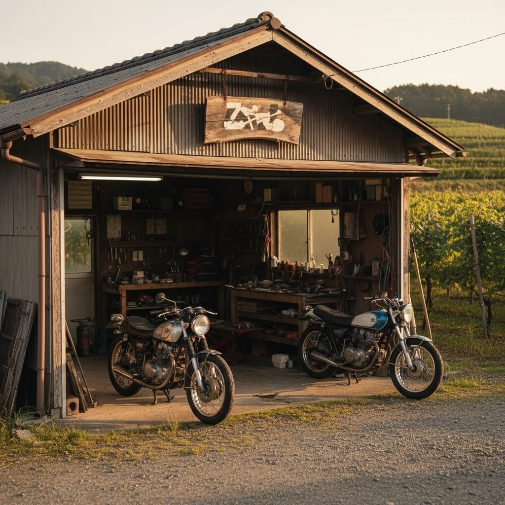
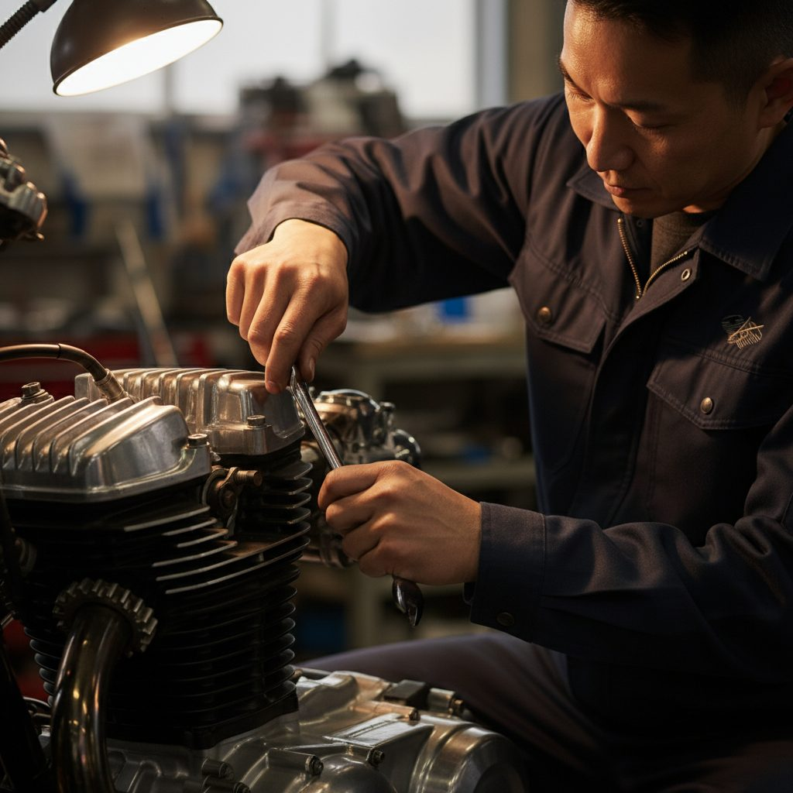
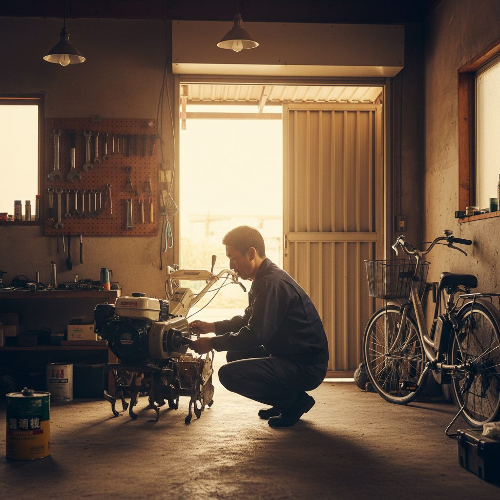
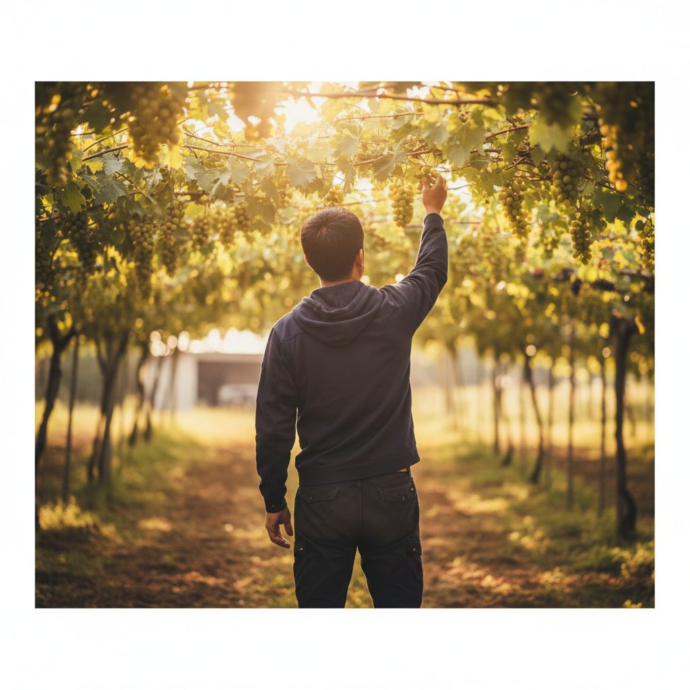
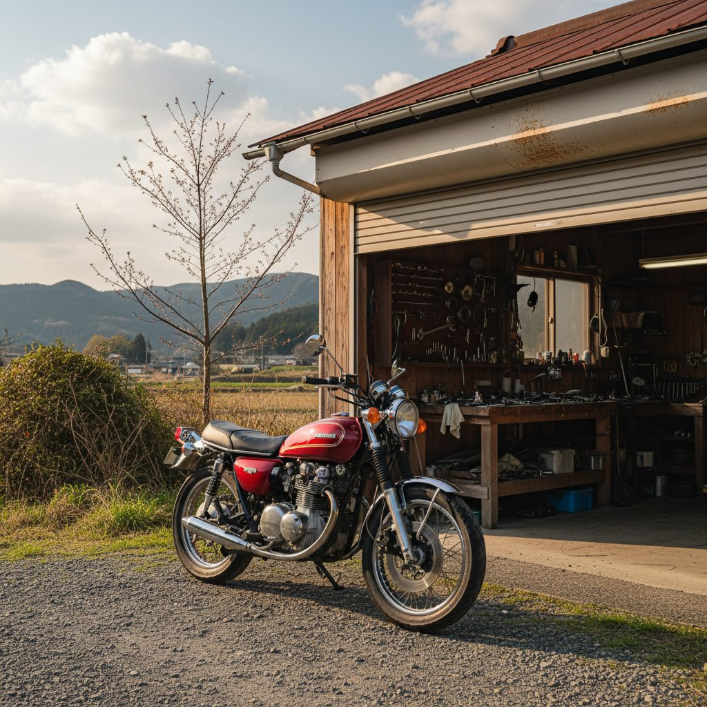
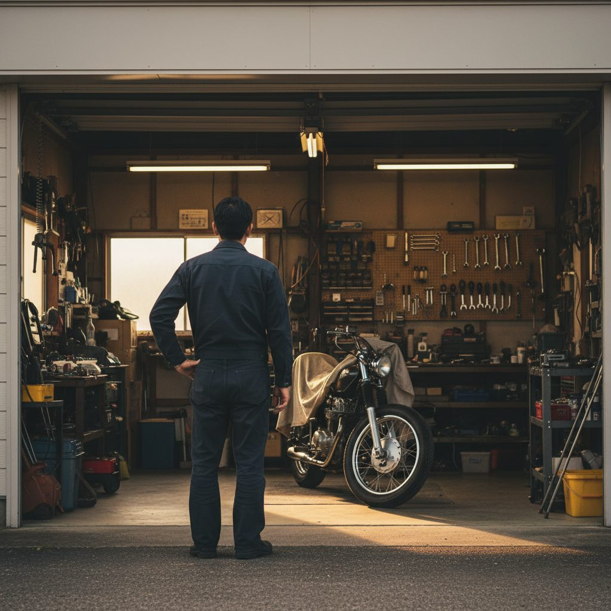
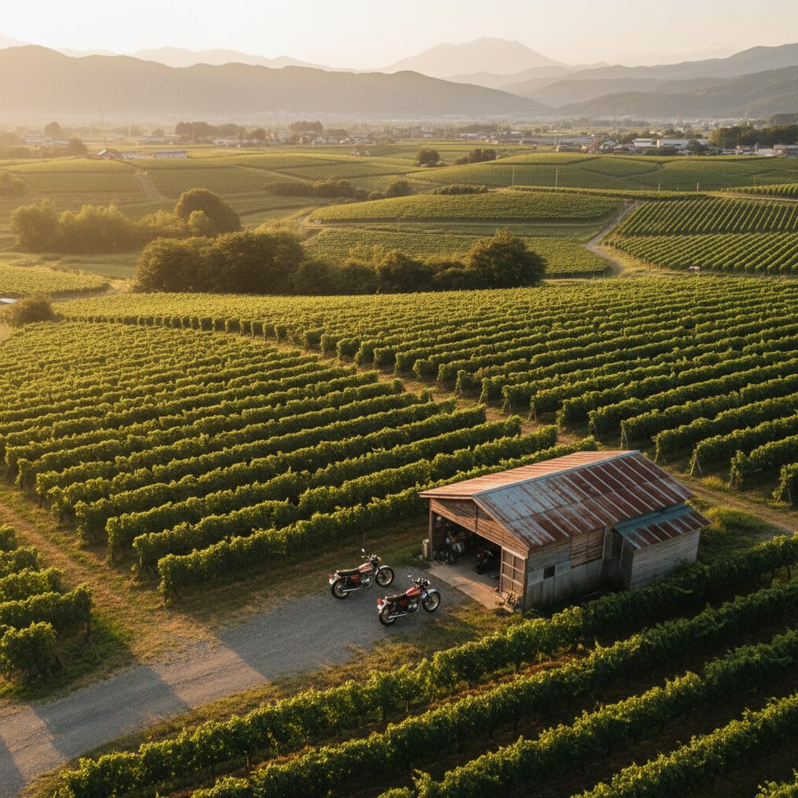

オーナー本人の顔出しは行わない。代役の人物または作業風景（手元・後ろ姿・シルエット）を中心としたイメージ動画とする。本ストーリーボード以降の人物画像は全て顔の特定ができない構図に再生成済み。
実際のガレージは畑から約10m離れているが、動画上は「畑の中のガレージ」として世界観を作り込む。葡萄畑＋桃畑＋甲州の山々が背景。
GARAGE226ロゴ＋「甲州のバイク修理屋」の文言を添えてインパクトを出す。地域訴求の核とする。
「ぶどう農家3代目の修理工」というストーリー軸はそのまま。修理風景＋ナレーション＋テロップで構成。ナレ音声は当方で準備。
2026-05-27（火）17:00 Zoom — 完成した動画をお見せしながら調整。
12シーンの画像をクロスフェードで連結し、テロップ＋仮ロゴを焼き込んだ初稿プレビュー（約36秒）です。BGM・ナレーションは後段で追加します。
※ ロゴは仮デザインです。HP（komajiinobikeshuuriyasan-3.jimdosite.com）の実ロゴデータをご支給いただけましたら差し替えます。
・尺：約36秒（クロスフェード反映後）
・解像度：1920×1080（Full HD）
・形式：MP4 (H.264) ／ 8.4MB
・各シーンに自動テロップ焼き込み
・右下に仮ロゴウォーターマーク
① 実ロゴデータ差し替え（HP掲載ロゴ／鈴木さん経由でご支給依頼）
② BGM選定（アコースティック系）
③ ナレーション収録（本人 or プロTTS）
④ 提供素材（奥様撮影）と差し替え
⑤ 冒頭にネオンタイポ演出（新夏ガレージ参考）
現状のロゴはダミー（「GARAGE226 ｜ 甲州のバイク修理屋」をヒラギノ角ゴ太字で組んだもの）です。
HP掲載のロゴ画像（PNG・なるべく透過背景）をChatWork等でご支給いただければ即差し替えます。
現場で高木様にご提示しご反応OKだった新夏ガレージ動画を実際にフレーム解析。そのトーン・演出設計を本案件にそのまま当てはめます。
佐賀の個人ガレージ・バイク陸送業。
・冒頭：ネオン風タイポグラフィ（緑/黄/オレンジ）でロゴを画像に重ねる派手な演出
・本編：シネマティック実写（整備手元クローズアップ／電話対応／積込シーン）
・登場人物：30-40代男性オーナー1人が全編登場。黒ジャンパー＋白ロゴで統一
・締め：オレンジ太字の連絡先テロップを画面いっぱいに表示
葡萄畑×ガレージの実写の上に「GARAGE226」のロゴを緑/黄/オレンジ系のネオン風フォントで重ねて登場。バイク屋らしいポップさ＋カッコ良さ。
提供素材を活かし、整備の手元・工具・走り出すバイクを浅い被写界深度で。BGMはアコースティック寄りで温度感を保つ。
参考動画のように、オーナー1人が全シーンで一貫。下記ムードボードでも同一人物像（40代前半・短髪・黒ワークジャケット）で揃えています。
参考動画の締めと同じ手法。
📞 080-1134-1792
山梨県甲州市勝沼町小佐手897
を画面いっぱいに大きく表示してクロージング。
30〜60代男性中心。山梨・勝沼周辺で「近所に相談できる場所がない」層。
バイク王・KAWASAKI出身の腕で、バイク／農機／電動自転車・キックボードをワンストップ修理。
「山梨にバイクも農機も直せるところがあるんだ」と覚えてもらう。月30万円の修理売上に寄与。
提供素材（奥様撮影）＋AI生成のインサート静止画／タイトル背景を組み合わせて編集します。
下記の画像は編集後の雰囲気を示すムードボードです（最終映像は提供素材ベース）。
※ 5/20打ち合わせの決定通り、人物は全シーン顔出しなし（後ろ姿・シルエット・手元）の構図に統一しました。

ナレ：山梨・勝沼。ぶどう畑と桃畑のまんなかに、ガレージができました。
狙い：「畑のまんなかにバイクガレージ」というギャップで3秒以内にスクロールを止める。

ナレ：バイクが、農機が、電動が—不調のままにしていませんか。
映像：バイク／農機／電動自転車の3連カット（各1.3秒、テンポ良く）。

ナレ：「近所に相談できる場所がない」、そんな声を、よく聞きます。

ナレ：GARAGE226、ガレージニニロク。勝沼に、できました。
狙い：BGMがワンランク上がり、屋号で「解」を提示。

ナレ：バイク王、KAWASAKIで培った腕で、一台一台、丁寧に仕上げます。
映像：手元クローズアップ＋工具を握る瞬間。
注：メーカーロゴは出さず、文中で「過去経歴」として明示。

ナレ：バイクはもちろん、農機も、電動自転車も、キックボードも。ここで、ぜんぶ直します。
狙い：本案件最大の差別化。バイク → 農機 → 電動自転車のカット切替（各2秒）。

ナレ：葡萄農家3代目。だから、片手間じゃない。本気で、向き合います。
映像：葡萄畑で作業する後ろ姿（顔出しなし）→ ガレージへ戻る引きカット。
狙い：「片手間じゃない」感を映像と一言で。地域密着性も同時に伝える。

ナレ：止まっていた愛機を、もう一度、走らせる。
映像：整備前 → 整備後 のビフォーアフター対比、または走り出すバイクのカット（提供素材次第）。

ナレ：気になることがあれば、まずは話を聞かせてください。
映像：ガレージ前で工具を持つ後ろ姿／作業を始めようとする雰囲気（顔出しなし）。
狙い：「相談しやすそう」を背中と所作で伝える。

ナレ：山梨・勝沼の、町の修理屋。
映像：葡萄畑×ガレージのワイドカット（俯瞰風）。
ナレ：甲州のバイク修理屋、GARAGE226。お気軽に、どうぞ。
映像：新夏ガレージ参考の通り、オレンジ太字で画面いっぱいに連絡先表示 → 「GARAGE226 ｜ 甲州のバイク修理屋」ロゴ静止 → フェードアウト。
本人ナレ（駒田様の声）／プロTTS／無音BGMのみ、いずれもご選択可能。話速 約7字/秒の落ち着いた朗読ペースで、収録尺は約38秒。シーン間の小休止2秒を含めて40秒に過不足なく収まる設計です。
0-3秒のフック差し替えで、配信媒体・ターゲット別に派生展開可能です。
登場人物・バイク・車庫を全シーンで統一するためのimage2.0用プロンプト。基準3枚（OWNER／MAIN BIKE／GARAGE）を先に作成 → 各シーン生成時にそれを参考画像として添付する手順で進めます。生成後はSeedanceで動画化。
各ブロックをそのままコピー＆ペーストして使用してください。
A stand-in actor representing the GARAGE226 owner — NOT the real Komada-san himself. Visible face OK, expressions encouraged. Japanese man, early-to-mid 40s, lean fit build, generic rural craftsman archetype. Short black hair with clean fade/undercut. Dark navy work jacket (chest pockets) zipped halfway, dark t-shirt, dark work pants. He CAN smile, look toward camera, show focused/serious expressions. Same actor across all scenes. Do NOT model the face on any specific real person.
Single specific motorcycle across all scenes: classic Japanese standard 250–400cc, single-cylinder, off-white tank with subtle dark side panels, single round headlamp, exposed engine block, spoke wheels, dual-purpose tires. Vintage but well-maintained. NO brand logos visible.
Small private rural workshop in Yamanashi/Katsunuma: single-story wooden frame with corrugated silver-gray metal roof, large open front shutter showing tools and workbench, hand-painted wooden signboard above entrance (no readable text). Surrounded by grape vine trellises and peach trees, mountains in distance.
Photorealistic, cinematic Japanese countryside documentary, like NHK regional spotlight or Yamaha rural commercial. 16:9 widescreen, warm natural daylight or golden hour. Slightly warm color grading, soft contrast, 50mm shallow DOF.
Prohibited: likeness of any specific real person, readable text on signs or logos, English/Chinese/Korean characters, watermarks, deformed hands or extra fingers, blood, weapons, women in foreground focus. The owner is a generic rural craftsman archetype, not a portrait of any individual.
Create a cinematic 16:9 wide landscape shot of a Yamanashi countryside scene in late afternoon golden light, modeled on the attached reference. Rows of grape vines on wooden trellises occupy the foreground, peach trees with green leaves visible to one side, distant mountains. Sitting in the middle of this agricultural setting is THE GARAGE226 building (apply GARAGE spec: small single-story wooden frame, corrugated silver-gray metal roof, large open front shutter, hand-painted wooden signboard with no readable text). The garage clearly sits among the orchards. No people. Apply STYLE spec (warm tones, NHK-documentary aesthetic, 50mm shallow DOF). Prohibited list applies. --ar 16:9
Create a cinematic 16:9 split-feel composition. In the foreground, THE MAIN BIKE (apply BIKE spec: 250-400cc classic Japanese standard, off-white tank, single round headlamp, no brand logos) stands tilted at the side of a rural Yamanashi road in soft late afternoon light with cool blue undertones, suggesting it has broken down. Behind in the soft-focus background, a small agricultural power tiller (耕運機) sits in a field, and an electric bicycle leans against a wooden fence — three vehicles, three problems, one frame. Mood: stranded, in need of a nearby repair shop. Apply STYLE spec. Prohibited list applies. --ar 16:9
Create a cinematic 16:9 photo of THE MAIN BIKE (apply BIKE spec) parked at the side of a quiet rural Yamanashi road at dusk with cool blue tones. The rider stands next to it in three-quarter profile (apply OWNER spec — the stand-in actor with face partially visible in profile, expression of concern looking down at the engine), helmet held in his left hand at his side. Empty country road stretches into the distance toward mountains. No other people. Mood: frustration, the moment of "where do I take this?". Apply STYLE spec. Prohibited list applies. --ar 16:9
Create a cinematic 16:9 photo of THE GARAGE226 building (apply GARAGE spec) in late afternoon golden light. The shutter is fully open revealing tools on pegboard walls, a workbench, and one classic motorcycle (apply BIKE spec) parked just inside. THE MAIN BIKE visible inside the garage. The hand-painted wooden signboard above the entrance is clearly framed (NO readable text — just the textured wood). Warm interior light glowing from within contrasts with the cooler outdoor light. Grape vines visible to the side. No people. Apply STYLE spec. Prohibited list applies. --ar 16:9
Create a cinematic 16:9 tight close-up of the owner's hands working on THE MAIN BIKE's engine (apply BIKE spec: same off-white tank visible in soft focus background, exposed engine block in focus). Hands hold a wrench, tightening a bolt on the engine — weathered but not old, slightly oil-stained, clearly experienced. The arms visible wear the SAME dark navy work jacket sleeve as the OWNER spec. The owner's face is NOT in frame — only hands and arms. Shallow depth of field, focus on the wrench-engine contact point. Warm tungsten work lamp from above. Apply STYLE spec. Prohibited list applies. --ar 16:9
Create a cinematic 16:9 photo inside THE GARAGE226 workshop (apply GARAGE spec: same wooden frame, tools on pegboard walls). In the foreground, THE OWNER (apply OWNER spec — the stand-in actor) is crouched in three-quarter profile, his face partially visible with a focused, serious expression as he inspects a small agricultural power tiller (耕運機) engine on the floor. Warm rim light from the open shutter behind him outlines his silhouette while a soft fill keeps his features readable. Behind him along the wall: an electric bicycle leaning against the pegboard, and THE MAIN BIKE parked beside it (apply BIKE spec). The composition tells the story: bikes + farm machines + e-bikes all repaired here. Cinematic chiaroscuro. Apply STYLE spec. Prohibited list applies. --ar 16:9
Create a cinematic 16:9 photo of THE OWNER (apply OWNER spec — the stand-in actor with sleeves rolled up over his dark navy jacket, dark pants) in a Yamanashi grape vineyard during golden hour. He is among the grape vines in a three-quarter angle from the side, one hand gently holding a cluster of dark purple grapes, looking at it with a calm, satisfied expression. Face is visible in soft profile. Rows of grape trellises stretch in front of him toward distant peach trees. In the FAR BACKGROUND (small and visible), THE GARAGE226 building (apply GARAGE spec) is barely visible, telling the story: "vineyard farmer AND mechanic". Warm golden light filtering through vine leaves. Apply STYLE spec. Prohibited list applies. --ar 16:9
Create a cinematic 16:9 photo of THE MAIN BIKE (apply BIKE spec: now gleaming clean after repair, polished off-white tank reflecting golden light, well-maintained details) parked in front of THE GARAGE226 building (apply GARAGE spec) in soft late afternoon golden light. The garage shutter open behind it, tools and workbench softly visible. The bike looks ready to ride again — front wheel slightly turned outward as if about to roll out. No people visible. Mood: triumph, satisfaction, "the bike lives again". Warm golden tones, cinematic anamorphic feel. Apply STYLE spec. Prohibited list applies. --ar 16:9
Create a cinematic 16:9 medium shot of THE OWNER (apply OWNER spec — the stand-in actor) standing at the entrance of THE GARAGE226 (apply GARAGE spec), facing camera in a calm, welcoming pose. He holds a wrench loosely in his right hand at his side, body slightly angled toward the open garage with his tools and THE MAIN BIKE visible behind him. His expression is approachable and grounded — a craftsman who is ready to listen. Warm late afternoon golden light catches the side of his face. The garage interior glows warmly behind him. Apply STYLE spec. Prohibited list applies. --ar 16:9
Create a cinematic 16:9 high-angle / aerial wide landscape shot of THE GARAGE226 in its setting (apply GARAGE spec) in late afternoon golden hour. The garage sits in the middle of a Yamanashi vineyard with peach trees to one side and distant mountains. From above, rows of grape vines fill most of the frame. Two or three motorcycles (THE MAIN BIKE among them) parked next to the garage. No people. Wide cinematic landscape, warm tones, peaceful. The composition makes it visually obvious: this workshop is literally in the middle of grape and peach orchards. Apply STYLE spec. Prohibited list applies. --ar 16:9
各シーン画像をSeedanceに渡すときの動きパラメータ。短くシンプルな動きが破綻しにくいので、過度なカメラ移動は避けます。
| # | シーン | 動き指示（Seedance） | 尺 |
|---|---|---|---|
| S01 | HOOK | Slow gentle camera push-in toward the garage, vines swaying softly in the wind, golden light shimmering. | 3s |
| S02 | PROBLEM | Static composition with subtle wind movement on the leaves around the bike. | 4s |
| S03 | AGITATION | Slow camera pull-back from the rider's back, the bike remains static, distant clouds drifting. | 3s |
| S04 | SOLUTION | Slow camera push-in toward the open garage shutter, warm interior light deepens, signboard slightly swaying. | 4s |
| S05 | USP① | Wrench tightening motion in real-time, hands moving with the tool, dust motes in warm light. | 5s |
| S06 | USP② | Owner's silhouette slowly turns or shifts weight, backlight flickers slightly with passing cloud. | 6s |
| S07 | STORY | Owner's hand slowly reaches and holds the grape cluster, vine leaves rustle in golden hour breeze. | 4s |
| S08 | PROOF | Subtle wind passes, light shifts across the polished tank of the bike, no movement of bike itself. | 4s |
| S09 | PERSONALITY | Owner shifts his weight slightly from back, breath movement in shoulders, wrench in hand barely moves. | 3s |
| S10 | LOCAL | Slow aerial drift over the vineyard toward the garage, warm tones intensify. | 2s |